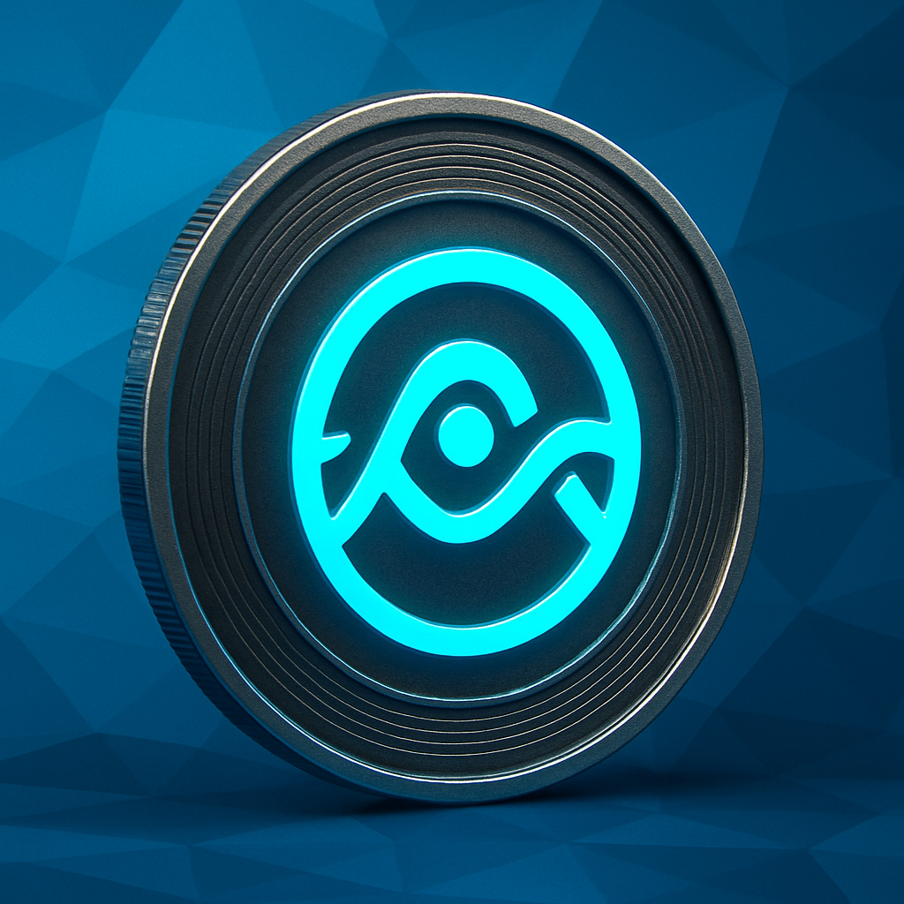

Consciousness Shapes REALITY
Energy Directs VALUE
The Quantum Field Token ($QBIT) represents a new paradigm where conscious participation shapes financial reality through quantum field dynamics.
Your wealth becomes frequency. Your awareness becomes capital. Your intention becomes the force that drives exponential value creation.
Quantum Vision

$QBIT came into fruition one powerful question: What if we could take everything we understand about consciousness, the impressions our intention has on reality and the truth that wealth itself is a function of collective belief—and actually apply it in the crypto world?
We've all witnessed it. Markets move on sentiment. Collective belief creates billion-dollar valuations. Even quantum physics shows us that the observer shapes reality through the simple act of observation.
So the question remains: What happens when a group of people who truly understand these principles come together with shared intention around wealth creation? What if instead of unconscious participation in economic systems, we could participate consciously?
$QBIT. A network where investment becomes conscious collaboration in something bigger than individual gain.
Each holder becomes part of a field where intention meets practical mechanics. Where collective focus translates into measurable results because we understand that money, at its core, is crystallized belief.
When we align our energy and act together with clear purpose, we create network effects that compound value for everyone involved. Blockchain is the infrastucture for concious execution.
Network Economics Behind $QBIT
$QBIT leverages proven economic principles from network theory, game theory, and collective action. Our tokenomics create measurable incentives for sustainable network growth and value creation.
Here's how our economic model drives wealth generation:
Network Effects
$QBIT's value increases exponentially as more participants join the network. Each new holder adds utility and liquidity, creating a positive feedback loop that benefits all existing participants through Metcalfe's Law.
Collective Incentives
Our tokenomics align individual success with network growth. Long-term holders receive compound benefits while contributing to ecosystem stability, creating game-theoretic incentives for cooperation over speculation.
Value Accumulation
Strategic vesting and anti-speculation mechanisms concentrate value among committed participants. This creates scarcity-driven price appreciation while building a stable foundation for long-term growth.
The result: $QBIT creates measurable wealth through proven economic principles—where network participation drives exponential value growth.
Core Technology
$QBIT utilizes three proven mechanisms: 🛡️ protected liquidity protocols, 📈 strategic cliff vesting, and 🔄 network effect optimization. Every feature is designed for sustainable growth and long-term value creation.
Protected Liquidity
Launch liquidity is safeguarded by advanced smart contracts that prevent market manipulation while enabling organic price discovery and sustainable growth.
- 🛑 Anti-manipulation smart contracts
- 🔄 Algorithmic liquidity management
- 👥 Community-driven growth mechanisms
This creates sustainable price action while protecting early investors from pump-and-dump schemes.
Strategic Cliff Vesting
Value grows through long-term commitment, not speculation. $QBIT rewards dedicated holders with compound benefits that increase over the 6-month vesting period.
- ⏱️ Time-weighted reward system
- 🔒 4-month cliff prevents speculation
- 💰 Treasury-backed compound interest
Your investment benefits from network growth while contributing to overall ecosystem stability.
Network Effects
$QBIT powers real ecosystem utilities beyond trading. Long-term holders unlock premium benefits: exclusive opportunities, governance rights, and funded development access.
- 🏆 Holder reputation system
- 💸 Community development funds
- 🧩 Builder and creator incentives
Your tokens provide access to an expanding ecosystem that increases in value with network growth.
The Quantum Network Effect
Holding $QBIT connects you to a consciousness-driven wealth network where aligned intention creates measurable abundance. This isn't just a token community—it's a quantum field of collaborative prosperity creation.
When consciousness-aligned holders unite with shared abundance vision, transformation accelerates exponentially. $QBIT holders aren't passive investors—they're active quantum nodes in a wealth amplification field. The more synchronized our network becomes, the more opportunities manifest for everyone, and the higher we all ascend together.
Evolution Timeline
Our quantum journey unfolds in three transformative phases, building tangible growth through DEX launches, centralized exchange listings, narrative expansion, and global ecosystem development.
Genesis Phase: DEX Launch
- Initial launch on Solana DEX (e.g., Raydium/Jupiter)
- Establish core liquidity pools and trading pairs
- Deploy initial smart contracts and token distribution
- Community building and early adopter programs
- Release founding member benefits
- Activate quantum field protocol metrics
Expansion Phase: Growth & Listings
- Secure listings on major centralized exchanges (e.g., Binance, Coinbase)
- Implement cross-chain bridges for multi-network access
- Launch marketing narratives and global campaigns
- Develop wealth manifestation tools and apps
- Build quantum reputation system for holders
- Activate community treasury and grants
Ascension Phase: Global Expansion
- Launch worldwide quantum network partnerships
- Deploy advanced governance and voting systems
- Release quantum field analytics dashboard
- Enable cross-chain liquidity and trading
- Establish ecosystem fund for innovation
- Set up physical network nodes and events